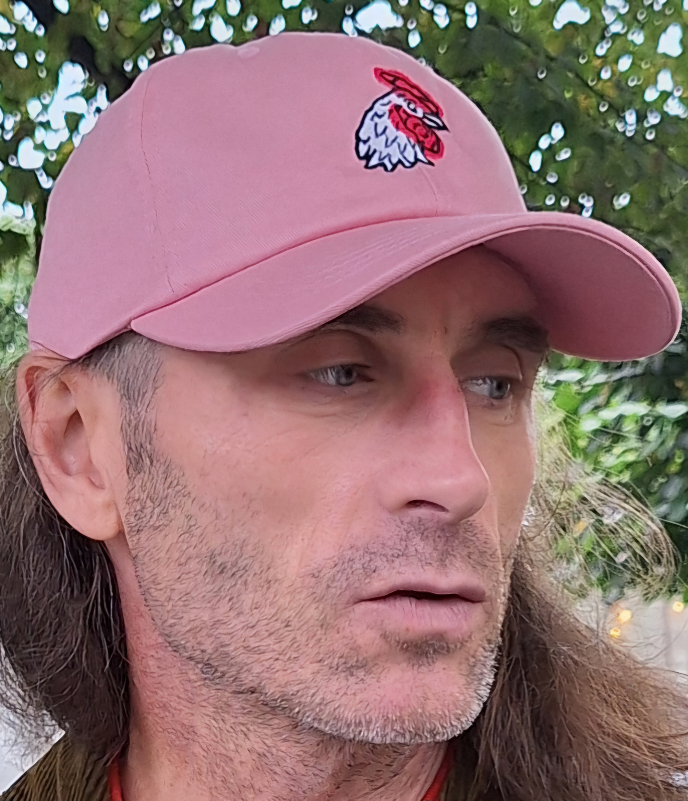

That's what I look like should you pump into me on the street

Education
- MA, sociology, Tartu University, 1997
- PhD, sociology, Tallinn University, 2024
- MSc, Data Science and AI, Tartu University, 2025
Work experience and skills
- Research: 25+ yrs of academic research projects, comparative research, qualitative and quantitative methodologies, EU/CoE Youth Partnership studies and policy consultancy, applied research.
- Communication & Teaching: Policy briefs, stakeholder facilitation, academic writing, training/mentoring; "translation" between domains
- AI Prototyping: Full-stack MVPs (Flask/React/MySQL), Docker/Nginx on Ubuntu
- Computational Text Analytics: TF-IDF + transformer embeddings (XLM-RoBERTa), topic modeling/clustering, hybrid similarity search
- Evaluation: RCT/quasi-experimental logic, monitoring frameworks, impact narratives, scenario/forecast briefs for policy decisions.
- entrepreneur, 2010-now
Hobbies
HOBBIES
Contact
Contacts